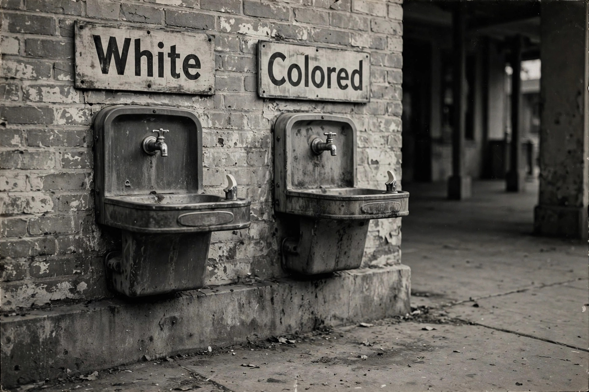

From Wikipedia, the free encyclopedia
| Separate but equal | |
|---|---|
| Established | Plessy v. Ferguson (1896) |
| Overruled | Brown v. Board of Education (1954), in public education |
| Legal basis | Equal Protection Clause, Fourteenth Amendment |
| Era | Jim Crow era |

Separate but equal was a legal doctrine in United States constitutional law holding that racial segregation did not violate the Fourteenth Amendment's guarantee of equal protection so long as the facilities provided to each race were nominally equal. The doctrine was established by the Supreme Court's decision in Plessy v. Ferguson (1896) and provided constitutional cover for the Jim Crow laws of the American South for more than half a century.
Homer Plessy, a man of mixed ancestry who could pass for white, deliberately boarded a whites-only railway car in Louisiana in 1892 to test the state's Separate Car Act. The Supreme Court upheld his conviction 7–1, ruling that mandated separation did not imply the inferiority of either race. Justice John Marshall Harlan's lone dissent argued that "our Constitution is color-blind" and warned the decision would prove as pernicious as Dred Scott.
In practice, facilities for Black Americans were almost never equal: Black schools received a fraction of the funding of white schools, and segregated transportation, hospitals, parks, and public accommodations were systematically inferior. The doctrine was nonetheless extended into areas such as education in cases like Cumming v. Board of Education (1899) and Gong Lum v. Rice (1927).
The NAACP's legal campaign, led by Charles Hamilton Houston and Thurgood Marshall, attacked the doctrine incrementally in graduate education cases such as Sweatt v. Painter and McLaurin v. Oklahoma (both 1950) before winning Brown v. Board of Education in 1954, in which a unanimous Court held that "separate educational facilities are inherently unequal." Subsequent decisions and the Civil Rights Act of 1964 dismantled the doctrine's remaining applications in public life.